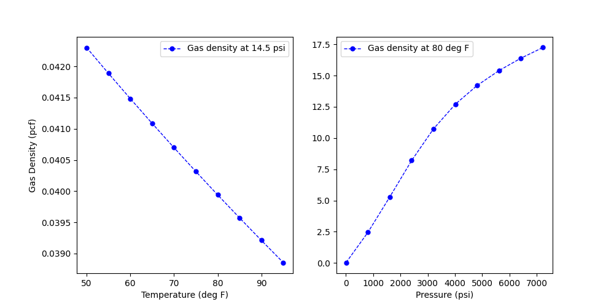

Note
Click here to download the full example code
Calculation of gas density
Gas density is calculated using real gas equations from input pressure, temperature and specific gravity of gas. The compressibility factor is calculated explicitly (Beggs and Brill - 1973) for the pressure and temperature combinations. The plot shows the variation of the gas density for methane gas (SG = 0.55) with varying temperature and pressure.
import os
import matplotlib.pyplot as plt
import pandas as pd
from indsl.oil_and_gas.gas_density_calcs import calculate_gas_density as cd
# pressure and temperature series define
base_path = "" if __name__ == "__main__" else os.path.dirname(__file__)
data = pd.read_csv(os.path.join(base_path, "../../datasets/data/density_pr_tmp.csv"), index_col=0)
sg = pd.Series([0.5534])
fig, ax = plt.subplots(1, 2, figsize=[10, 5])
ax[0].plot(
data["T_var (F)"],
cd(data["P_con (psi)"], data["T_var (F)"], sg),
color="blue",
linestyle="dashed",
linewidth=1,
markersize=10,
marker=".",
label="Gas density at " + str(data["P_con (psi)"][0]) + " psi",
)
ax[0].set_xlabel("Temperature (deg F)")
ax[0].set_ylabel("Gas Density (pcf)")
ax[0].legend()
ax[1].plot(
data["P_var (psi)"],
cd(data["P_var (psi)"], data["T_con (F)"], sg),
color="blue",
linestyle="dashed",
linewidth=1,
markersize=10,
marker=".",
label="Gas density at " + str(data["T_con (F)"][0]) + " deg F",
)
ax[1].set_xlabel("Pressure (psi)")
ax[1].legend()
plt.show()
Total running time of the script: ( 0 minutes 0.385 seconds)